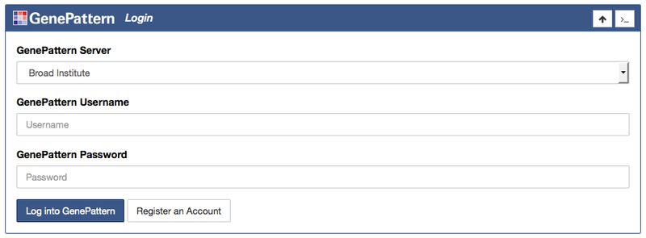
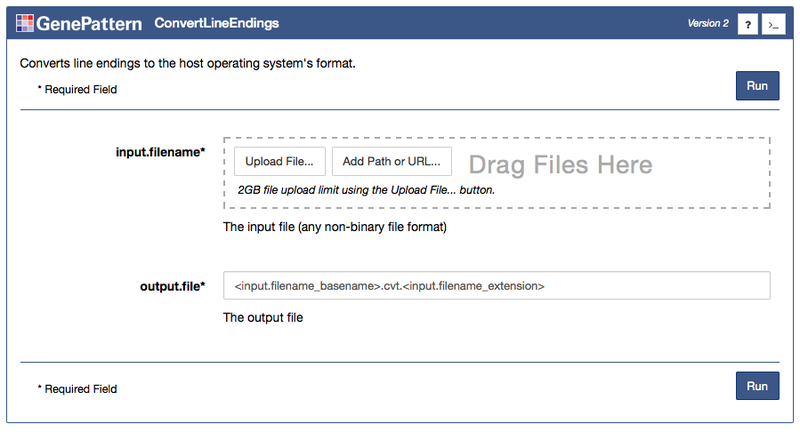
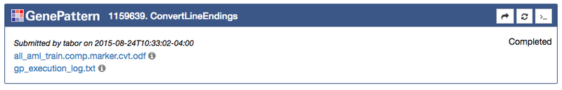
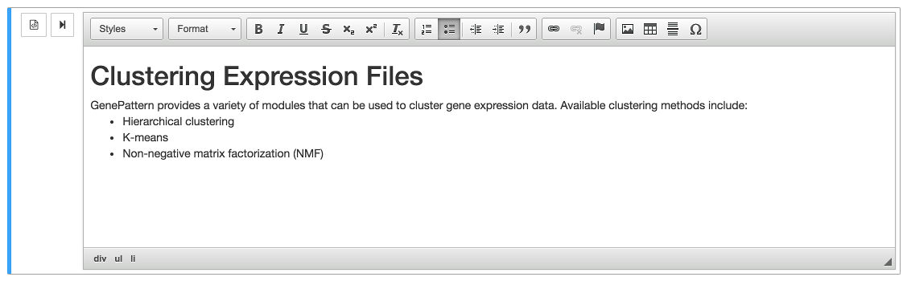
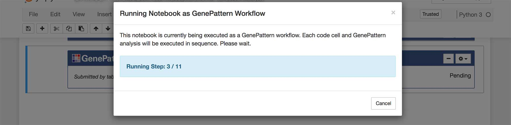

GenePattern Notebook Environment Features
Basic Features
These features are the most commonly used features in the GenePattern Notebook environment. They also form the building blocks for most advanced use cases.
1. GenePattern Cells
The GenePattern Notebook environment provides a number of graphical widgets that make performing analyses easy, even for non-programming users. These widgets take the form of GenePattern Cells that allow a user to prepare analyses, launch jobs and visualize results.
To insert a GenePattern Cell, insert a new cell, either through the Insert > Insert Cell Below menu or by clicking the button in the notebook toolbar. Once a new cell has been inserted, you can select the cell and then change the cell type to GenePattern either by using the Cell > Cell Type > GenePattern menu or by going to the dropdown menu in the notebook toolbar and selecting GenePattern from the list of options.
A. Authentication Cells
The first GenePattern cell that a user is likely to encounter is an Authentication Cell. This cell allows a user to sign into a GenePattern server. Doing this allows GenePattern to keep a user's results private, and to remember a user's settings.
Authentication cells will look like a login form with the additional option of selecting which GenePattern server to sign into. If the user has already authenticated, such as when usng the GenePattern Notebook Repository, the user will instead be prompted to either sign in as the current user or to cancel and sign in as a different user

B. Analysis Cells
After a user has signed in using an Authentication Cell, the next task is usually to insert an Analysis Cell to perform an analysis. To do this click the Tools button in the notebook toolbar. This wll open a dialog box with a list of available GenePattern analyses. Search or browse through the list and then click one of the options to insert an Analysis Cell of that type.
Every Analysis Cell has a number of parameters, which can be used to upload data and to select other options for the analysis. Once you fill in these parameters, click Run to submit them as a job on the GenePattern server.
Once the Run button has been clicked, all selected files will upload and then a Job Cell will be inserted below to indicate the status of the job in GenePattern’s queue (see Job Cells below).

C. Analysis Jobs
Once an analysis is launched, a new job section will appear in the analysis cell. This section represents the status of a job that has been submitted to GenePattern queue for processing. Jobs progress through the states of Pending, Running and finally either to Completed or Error.
Once a job has completed or experienced an error, the cell will update to display a list of outputs. These outputs are files which can be displayed in the browser, downloaded or sent as input to another GenePattern analysis. Outputs are indicated by the icon.
To see a list of all output file options, simply click that output in the list and a menu wll open, displaying the available options.
If this analysis includes visualization, the visualization will load and appear inside the Job Cell as well.
Additional options, such as memory requirements, can be specified when submitting a job. These options are hidden by default, but can be made visible by going to the cell's Gear () menu and selecting Toggle Job Options.

2. Markdown Cells
Markdown cells are another cell type available in the GenePattern Notebook environment. They allow a notebook author to take notes, document methods or embed images in a notebook document.
To insert a markdown cell, first insert a new cell, either through the Insert > Insert Cell Below menu or by clicking the button in the notebook toolbar. Once a new cell has been inserted, you can select the cell and then change the cell type to Markdown either by using the Cell > Cell Type > Markdown menu or by going to the dropdown menu in the notebook toolbar and selecting Markdown from the list of options.
Markdown cells allow the user to format text using either HTML or the Markdown syntax. Additionally, we provide a "What You See is What You Get" rich text editor (see the feature below).
3. Rich Text Editor
The GenePattern Rich Text Editor allows a user to format notes and documentation in a notebook in much the same way that one might use Microsoft Word or Libre Office — without the need to write a single HTML tag or line of markdown.
To use the Rich Text Editor, first insert a markdown cell (see the instructions above). Once a cell has been changed to the markdown type, two buttons should appear to the left of the cell. The button opens the Rich Text Editor and the button finalizes the cell and renders the text.
Click the button and the editor will appear. A toolbar will show above the cell, allowing the user to format text, insert headers or add links. Style the text as desired, and when finished, click the button to finish editing.

4. Workflow Execution
A GenePattern notebook can be executed as an automated workflow. When this happens, each cell is run in order, starting with the top. Code cells execute their contained code. GenePattern analyses are launched and the workflow waits for the analysis to complete before moving forward. If an error is encountered - either as the result of a code cell or the status of a GenePattern job - execution halts and waits for user input.
By combining this feature with the Job Result Syntax feature, a workflow can be configured to run each step in sequence, taking the output of upstream steps and sending the results as the input to downstream analyses.
To run a GenePattern notebook as a workflow, first locate an authentication cell and click on the gear menu. Select Run Notebook as Workflow. A dialog box will pop up displaying the status of running the workflow. Simply wait for execution to complete.
